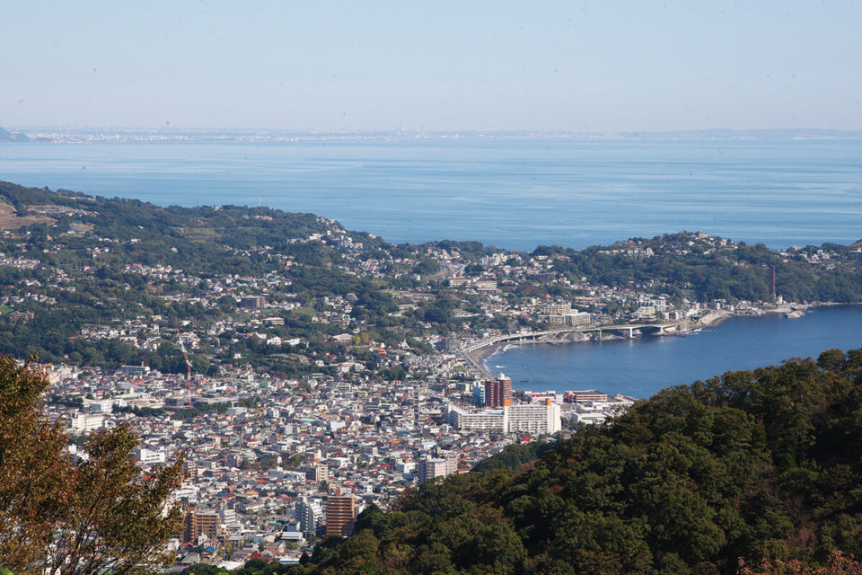
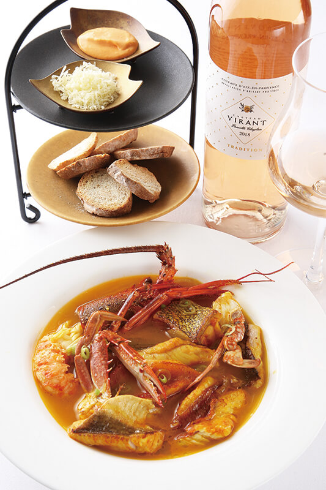
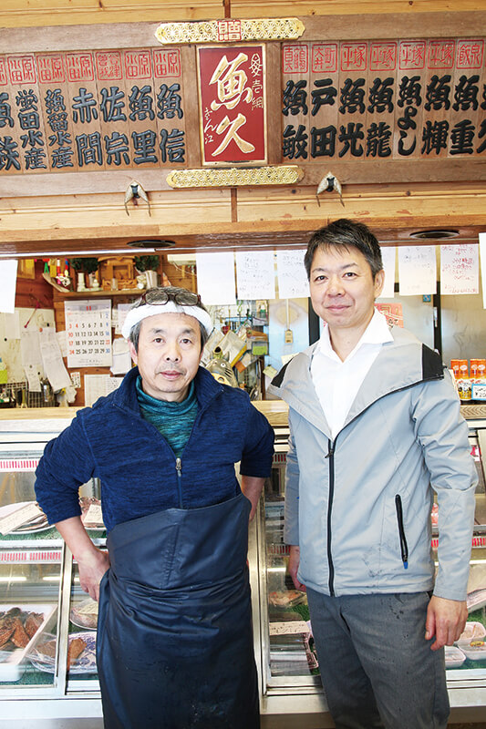
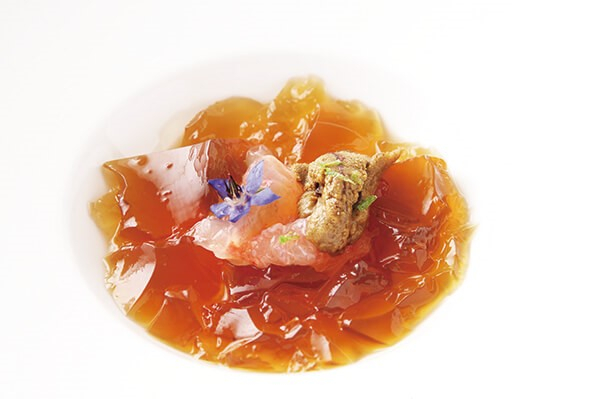
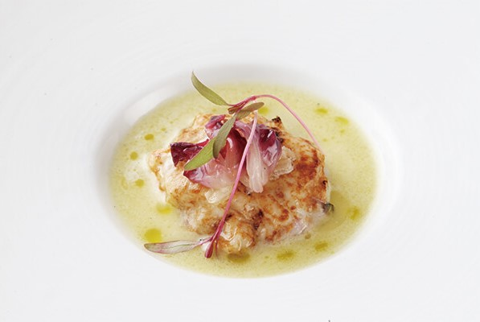
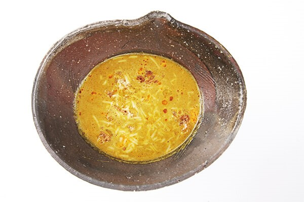
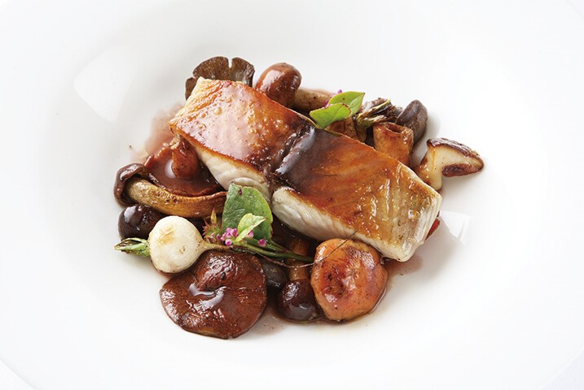

Префектура Канагава · Югавара · еда
Calanques в Югаваре: буйабес шефа, который каждое утро выбирает рыбу сам

Летом 2019 года в Югаваре открылся маленький французский ресторан с марсельским названием. Его шеф двадцать два года готовил рыбу у моря в Атами, а здесь решил делать всё сам: от закупки рыбы до мытья посуды.
Ресторан
Ставка на буйабес

В июле 2019 года в Югаваре, онсэн-городке на юго-западе префектуры Канагава, открылся небольшой ресторан Calanques. Одна местная любительница хорошей еды отозвалась о нём коротко: «Хорошее место. Обязательно возьмите буйабес».
Удивляться тут нечему. Владелец и шеф Сигэру Конно двадцать два года руководил кухней ресторана Villa del Sol при дорогом рёкане в соседнем Атами. Ресторан занимал историческое здание, охраняемое как культурное наследие, из его окон было видно море, и это был один из лучших рыбных французских ресторанов. Когда рёкан закрылся на обновление вместе с рестораном, шеф открыл собственное дело по соседству, в Югаваре.
Команда здесь минимальная: шеф и сомелье, а в горячие дни к ним присоединяется жена шефа. Почти все блюда шеф доводит до конца сам, поэтому они так точно выстроены. В буйабес идут семь или восемь видов рыбы, ещё около шести видов уходят на бульон. По сравнению с прежним местом блюдо стало заметно богаче.

«В рыбную лавку „Уокю“ между Атами и Югаварой я езжу каждый день. Мы знакомы давно, но если приходить ежедневно, лучшая рыба достаётся тебе»
Сигэру Конно, шеф
Из того, что привезли с моря в этот день, шеф выбирает самое вкусное. Отсюда и ровно высокий уровень кухни. Буйабес у него стал тоньше и деликатнее, чем был в Атами.
Название
Южная Франция у залива Сагами

Марсель, второй по величине город Франции, издавна стоит на перекрёстке культур и торговых путей. Когда-то он жил морскими перевозками, со временем стал торговым городом, но на побережье вокруг него сохранилось много нетронутой природы. Каланками называют узкие бухты на побережье к востоку от Марселя. Белые известняковые скалы, поднятые движением земной коры, отвесно уходят в синюю воду, и этот контраст запоминается надолго.

Полтора года шеф учился в Марселе и за это время много раз ездил к каланкам.
«Не хотел забывать эту красоту. И потом, Марсель считается родиной буйабеса, так что с названием я не сомневался»
Сигэру Конно, шеф
Югавару он выбрал потому, что здесь его дом, он хорошо знает округу и чувствует себя спокойно. А главное, городок между морем и горами напоминает ему годы учёбы на юге Франции.
«Стоит немного проехать на машине, и чувствуешь запах моря, а потом запах деревьев в горах. Рыба и овощи рядом: для повара место идеальное»
Сигэру Конно, шеф
Кухня
Сначала продукт, потом блюдо

День шефа начинается с закупки рыбы и овощей. Во Франции, когда он только начинал, он ходил с шеф-поваром на утренний рынок. Тот смотрел на рыбу и покупал то, что ему понравилось, а блюдо придумывал уже потом. В Японии было наоборот: под нужное блюдо заказывали нужную рыбу, и меню годами оставалось одним и тем же.
Тогда шеф понял, что о блюде можно думать, только увидев продукт, и стал каждый день проверять, какая рыба сегодня лучшая. В «Уокю» он осматривает весь улов и тут же заказывает одно за другим. Постоянные гости, которые берут курс на выбор шефа, чаще всего просят суп де пуассон. Для него берут другую рыбу, чем для буйабеса: её протирают целиком, и суп получается с ярко выраженной текстурой.

Овощи шеф тоже добывает по-своему. В пятнадцати минутах от ресторана есть ферма: шеф берёт корзину и идёт в теплицу. «Собираю, что нравится и сколько нужно». За овощи он платит фиксированную сумму в месяц, так что собирать можно без счёта.
«Закупка, подготовка, готовка, уборка: делать всё одному тяжело. Зато я могу сказать, что каждое блюдо на сто процентов моё, и хочу довести их до ещё большего совершенства. А больше всего мне нравится разговаривать с гостями, рассказывать им о продуктах»
Сигэру Конно, шеф
В 2020 году обед здесь стоил от 3800 иен, ужин от 4500 иен, курс с буйабесом 10 000 иен, налог и плата за обслуживание отдельно.
Calanques
- Адрес
- префектура Канагава, Асигарасимо, Югавара, Мияками, 374-1, Lions Mansion 2, 1-й этаж
- Телефон
- +81 465-42-9360
- Часы работы
- 11:30–13:30 и 18:00–19:30 (последний заказ)
- Выходные
- понедельник, вторник в обед
- Цены / Вход
- обед от 3800 иен, ужин от 4500 иен, курс с буйабесом 10 000 иен (налог и обслуживание отдельно)
- Сайт
- calanques.jp
Фото: Мунэаки Маэда.